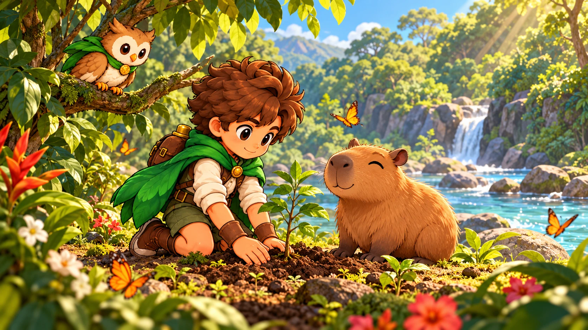

Explore
No celular, use o joystick. No computador, use WASD ou as setas.
O DIÁRIO DA AVENTURA
Um pequeno gesto pode transformar uma floresta inteira. Conheça quem vai viver essa jornada com você.

01 O chamado da floresta
Kai é um jovem explorador com uma ligação especial com a natureza. Ao lado de Flora, sua companheira coruja, ele descobre que a floresta precisa de ajuda.
Juntos, eles partem por caminhos, rios e paisagens cheias de vida. Cada encontro traz uma descoberta. Cada escolha é uma oportunidade de cuidar do mundo.
Uma amizade que atravessa a floresta.
Uma coragem que pode transformar o futuro.
02 Uma floresta para explorar
Ande livremente pelas trilhas em todas as direções. Flora acompanha você. Em terra, ela descansa no ombro de Kai; no rio, continua voando para guiar a natação.
Arraste o joystick em qualquer direção. Segure a água para testar!
No celular, use o joystick. No computador, use WASD ou as setas.
Abra o registro. Segure ÁGUA perto das chamas.
Use a mão perto de um animal para tratar o ferimento.
Toque na missão ou na Flora para ver o caminho.
03 O equilíbrio da natureza
Cada missão guarda um fragmento: vermelho do fogo, azul da água, amarelo dos animais, verde da floresta e violeta da cidade. Complete cinco cuidados para reunir o colar do Guardião.
Receba os equipamentos de Carlos, abra a água, apague oito focos e cuide de três animais. Depois, celebre e receba o fragmento vermelho do colar.
Nade, recolha resíduos e ajude os peixes e a tartaruga.
Resolva desafios e leve os amigos ao abrigo de Marina.
Plante árvores nativas, regue e prepare os ninhos.
Recicle, ajuste os painéis solares e cultive jardins.
Cinco missões para explorar. Ao reunir os cinco cristais, celebre o renascimento da natureza.
04 Guardiões fora da tela
Cuide de uma plantinha. Veja como ela muda a cada semana!
Feche a torneira enquanto escova os dentes.
Animais silvestres precisam de espaço e de seu habitat.
Separe os resíduos e nunca deixe lixo na trilha.
Encontrou fogo ou um animal ferido? Chame um adulto e mantenha distância.
No jogo, Kai usa equipamentos com a orientação de Carlos. Na vida real, o resgate e o combate a incêndios são feitos por profissionais.
05 Quem cuida desta aventura
Guardião da Natureza é um projeto acadêmico da Universidade do Estado da Bahia — UNEB, desenvolvido na disciplina Web 1, com o apoio do Professor Peterson Lobato.
Unimos programação, arte e educação ambiental em uma aventura para crianças de 5 a 10 anos. Nossa ideia é aprender brincando: cada pequeno cuidado ajuda a transformar o mundo.
OS CRIADORES DA AVENTURA
Deslize para os lados
CRIAÇÃO DO PROJETO
Iuri Barroso Nascimento
Toque no Iuri para dar um oi!
CRIAÇÃO DO PROJETO
Hicham Mohamed El Attar
Toque no Hicham para dar um oi!
APOIO E ENSINO · WEB 1
Peterson Lobato
Aprender, criar e cuidar: uma aventura que começa na UNEB.
REFERÊNCIAS QUE VIRARAM IDEIAS
A aparência de Flora tem inspiração em Rowlet. Decidueye, sua evolução final, também aparece aqui como referência visual. Kai é o jovem Guardião da nossa aventura, que aprende a cuidar da natureza ao lado de Flora.
Rowlet e Decidueye: Pokémon © Nintendo / Creatures / GAME FREAK. Artes oficiais de referência disponibilizadas no acervo PokeAPI. As referências são apresentadas como inspiração deste projeto acadêmico independente.
Obrigado por fazer parte desta história.
A natureza também precisa de você!